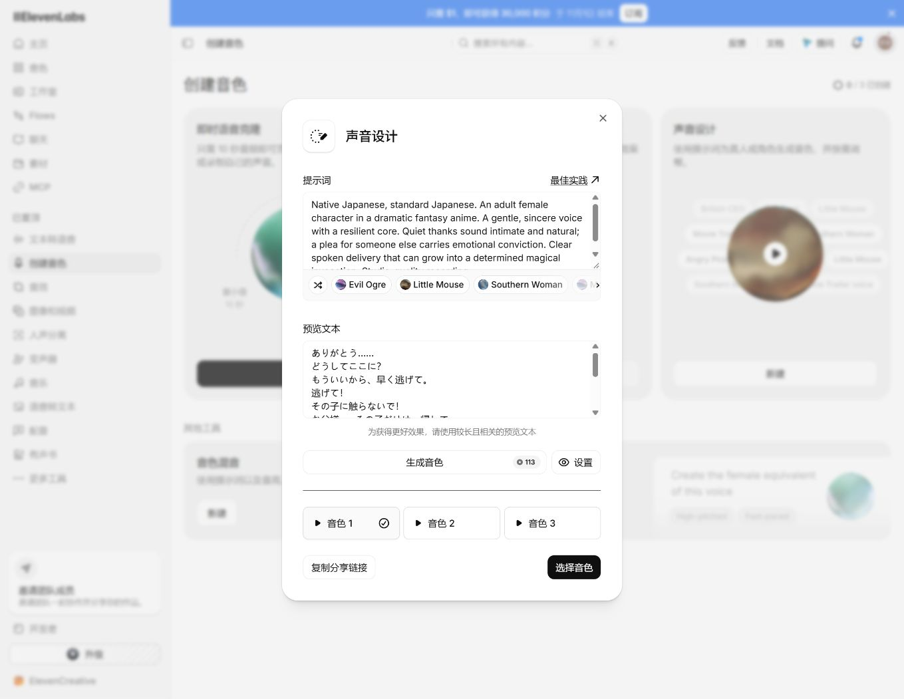

同一组 12 句日语台词，三种候选。网页显示本次 113 积分；音频已下载。本页选项只保存在当前浏览器，不会注册音色或替换正片。
尚未选择
先比较音色是否适合角色，再听恳求是否有力量、咏唱是否自然。跨场景连读仅供挑选；逐句读音、停顿和表演尚未通过验收。
| 日语主稿 | 中文回译 |
|---|---|
| ありがとう…… | 谢谢你…… |
| どうしてここに？ | 你怎么来了？ |
| もういいから、早く逃げて。 | 已经够了，快逃吧。 |
| 逃げて！ | 快走！ |
| その子に触らないで！ | 别碰那孩子！ |
| お父様……その子だけは、帰して。 | 父亲……至少让那孩子回去吧。 |
| あの子は…… | 那个孩子…… |
| 灰に眠る、かすかな光よ。 | 沉睡于灰烬中的微光啊。 |
| この手に、宿れ。 | 来到我手中吧。 |
| もう一度、燃えよ―― | 再燃一次—— |
| 星火。 | 星火。 |
| うん。 | 好。 |
送读时将 宿れ／燃えよ／星火 写作 やどれ／もえよ／せいか，主稿未改。声音未加入达芬奇，未占用已保存音色名额。
